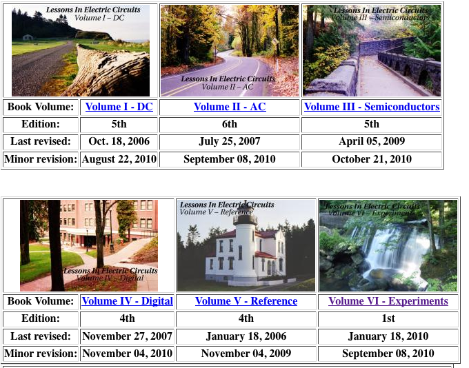

Table of Contents
Clothing
Pants
Arizona
Wrangler
Land's End
Eddie Bauer
Calvin Klein
Old Navy
Pants
Active wear
Formalwear
Sweater
Shoes
Some Circuits Resources/Knowledge
Lessons in Electronic Circuits
…lots of great lab examples!

Berkeley EE 40 Class (
notes
,
videos
!)
Lessons
MOSFET is controlled by voltage, BJT's (bi-junction transistors) are controlled by current!